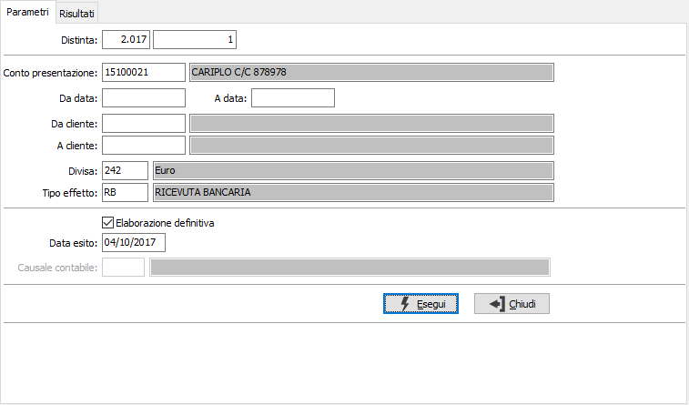
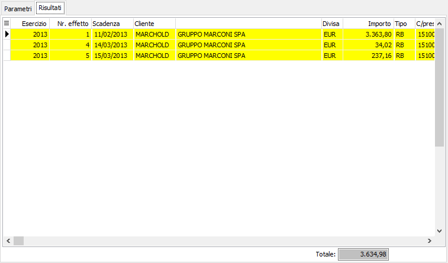
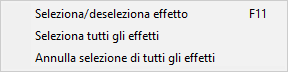

Esito effetti
Il programma provvede a chiudere definitivamente le partite “esposte”, ovvero le scadenze a mezzo RB già presentate su distinta bancaria definitiva. Tali scadenze, non essendo ancora state accreditate dalla banca, risultano in esposizione cambiaria fino al momento in cui, ricevendo la contabile di accredito, si esegue questo programma. È opportuno eseguire questo programma nella seconda decade di ogni mese, indicando come data di fine scadenza l’ultimo giorno del mese precedente. Nel caso in cui sia previsto, dalla configurazione, l'utilizzo di un conto di transito è attiva la causale contabile per effettuare automaticamente il movimento di storno. La selezione delle scadenze da esitare è modificabile dall'operatore.

Fra i parametri che vengono richiesti compaiono anche l'anno ed il numero della distinta, che è possibile utilizzare, per richiamare una distinta, solo dopo avere effettuato la stampa definitivi della distinta stessa.
CONTO DI PRESENTAZIONE: codice alfanumerico di 8 caratteri, presente nella tabella Conti correnti, per indicare la banca di presentazione della distinta. Sul campo è attiva la viste F9 sulla tabella stessa.
DA DATA: indicare la data di scadenza da cui si intende iniziare la selezione degli effetti. Confermando a vuoto la stampa inizia dal primo effetto valido per l'esercizio corrente.
A DATA: indicare la data scadenza con cui si intende terminare la selezione degli effetti. Confermando a vuoto la stampa termina con l'ultimo effetto valido.
DA CLIENTE: indicare il codice cliente dal quale si vuole far iniziare l'esito delle partite.
A CLIENTE: indicare il codice cliente al quale si vuole far terminare l'esito delle partite.
DIVISA: codice alfanumerico di 3 caratteri, presente nella tabella Divise, per indicare la divisa degli effetti che si vogliono selezionare. Sul campo è attiva la ricerca (F9) sulla tabella stessa.
TIPO EFFETTO: definisce il tipo di effetto da selezionare. Sul campo è attiva la funzione di ricerca (F9).
ELABORAZIONE DEFINITIVA: check box per definire il tipo di stampa. Valori possibili:
vuoto = Elaborazione di prova (nella pagina risultati non sarà possibile selezionare gli effetti)
spunta = Elaborazione definitiva
DATA ESITO: data obbligatoria che viene registrata, in caso di elaborazione definitiva, sulle singole scadenze come data di chiusura. Viene proposta la data del giorno, modificabile dall’utente.
CAUSALE CONTABILIZZAZIONE: codice della causale contabile, necessario per la contabilizzazione dell'esito, se gestito il conto di transito. Sul campo è attiva la funzione di ricerca (F9) sulla tabella stessa.
La pagina dei risultati riporta gli effetti da esitare in relazione ai criteri di selezione inseriti; se è stata scelta l'elaborazione definitiva gli effetti saranno già tutti selezionati. Agendo sui pulsanti Stampa o Anteprima sarà possibile effettuare la stampa dei dati con evidenziati gli effetti selezionati per l'esito.


La selezione e l'annullamento degli effetti può avvenire in diversi modi. Per selezionare oppure annullare la selezione di un effetto è sufficiente fare doppio clic con il mouse sul rigo interessato (se selezionato verrà annullata la selezione altrimenti il contrario). È anche possibile utilizzare il menù indicato a lato (attivato tramite la pressione del tasto destro del mouse) oppure utilizzare gli appositi tasti funzione. È consentito selezionare o deselezionare un solo effetto oppure tutti gli effetti.La pressione del pulsante Salva sulla toolbar o del tasto F10 esegue l'operazione.